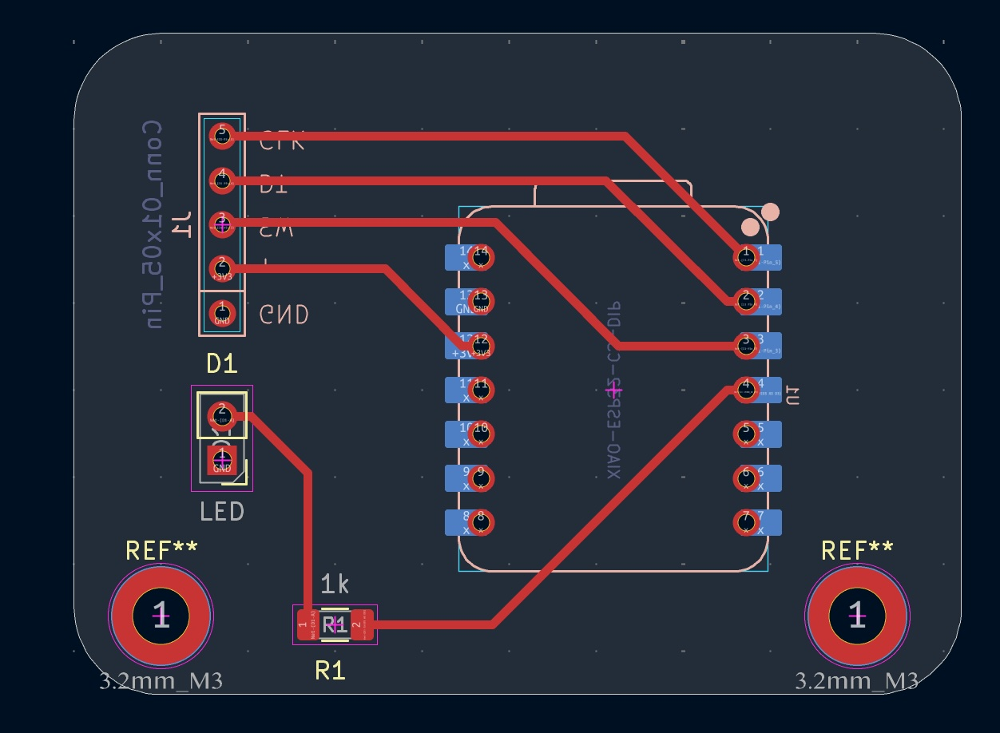
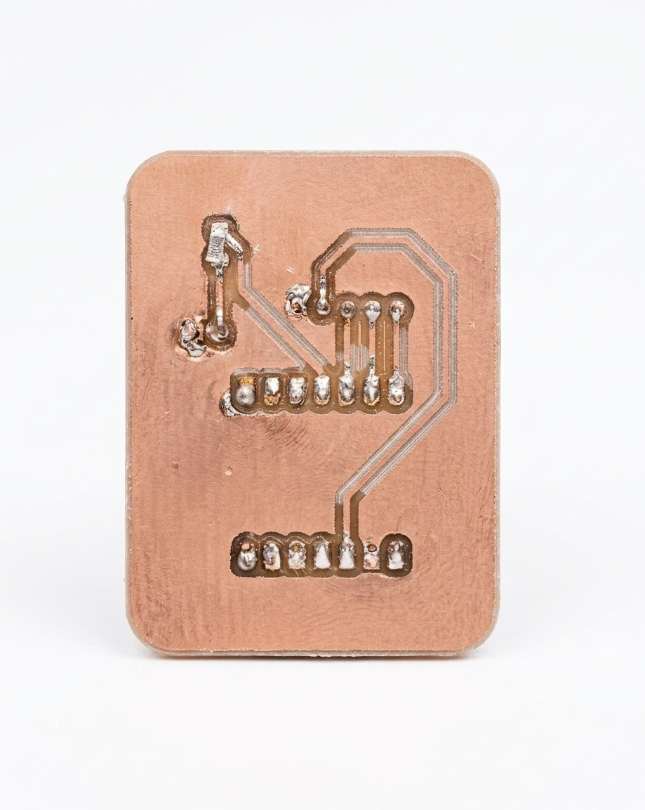
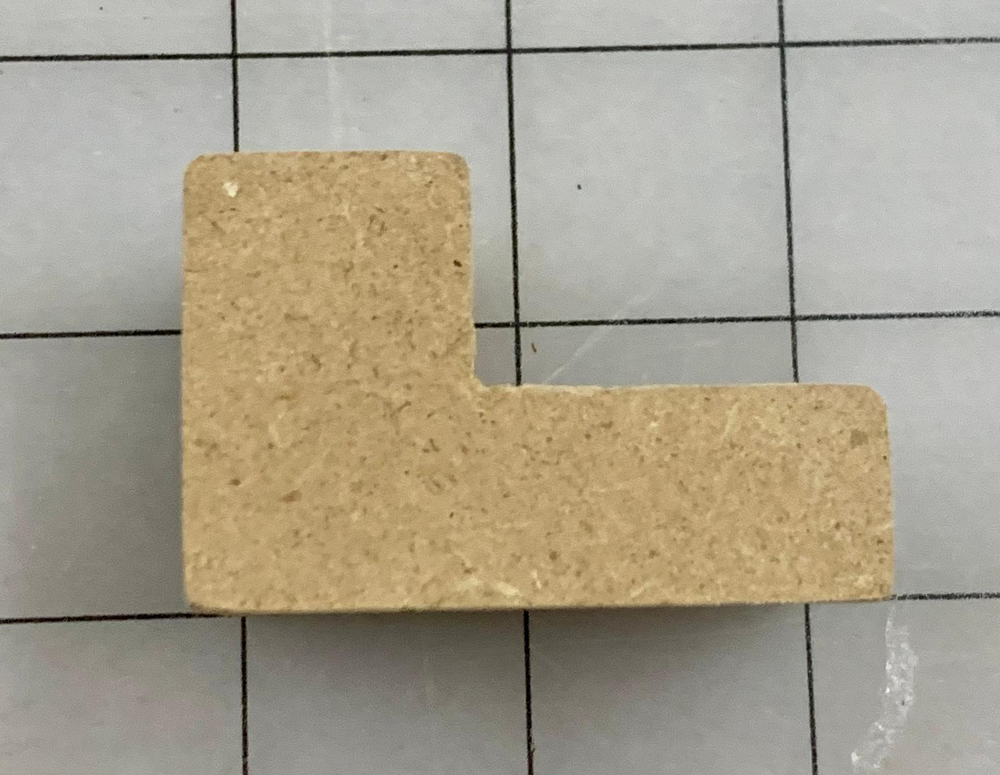
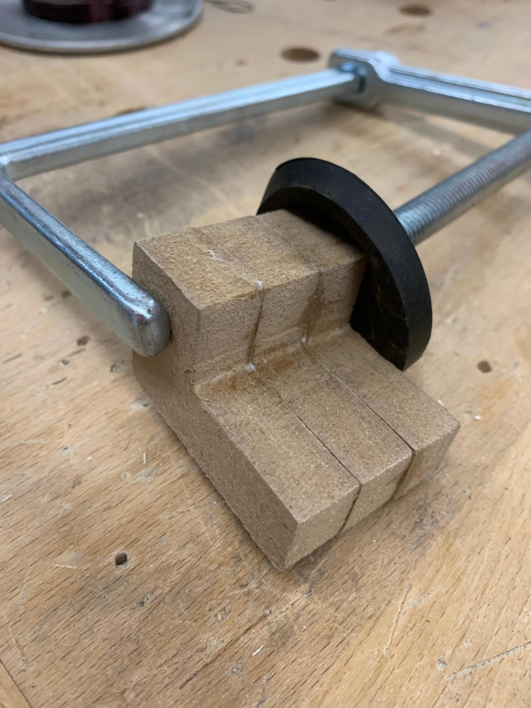
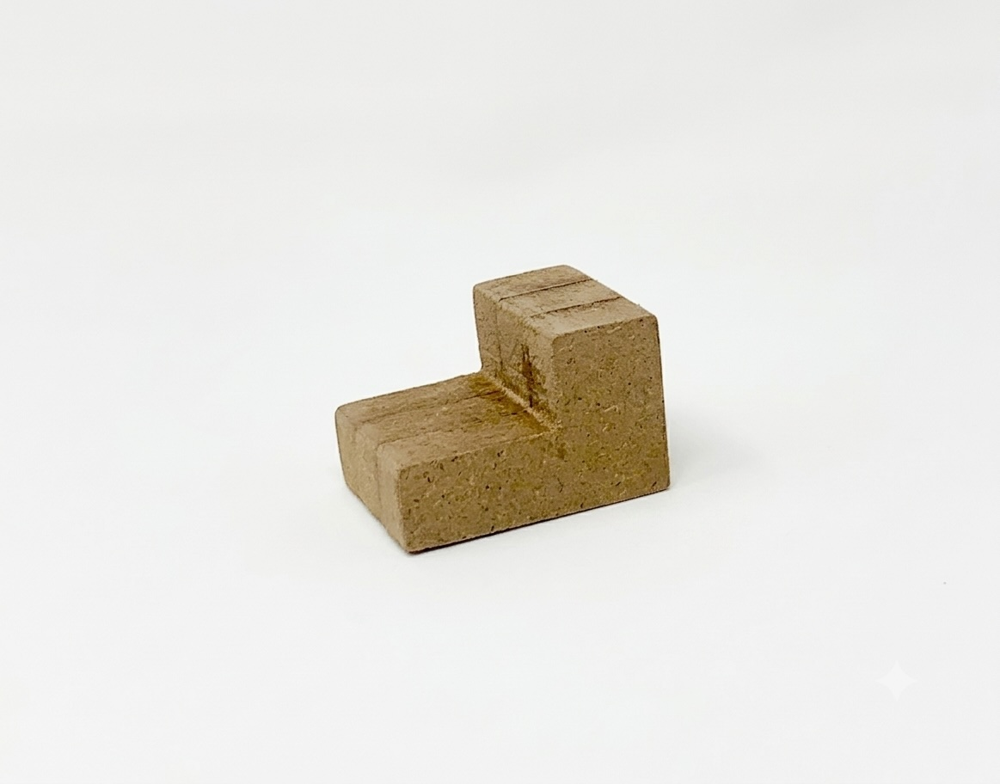
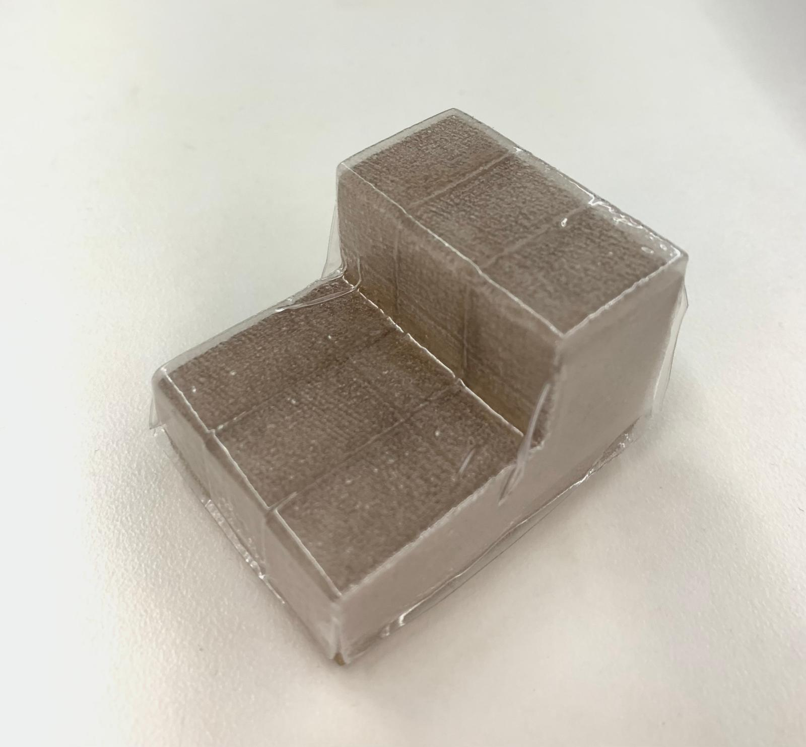
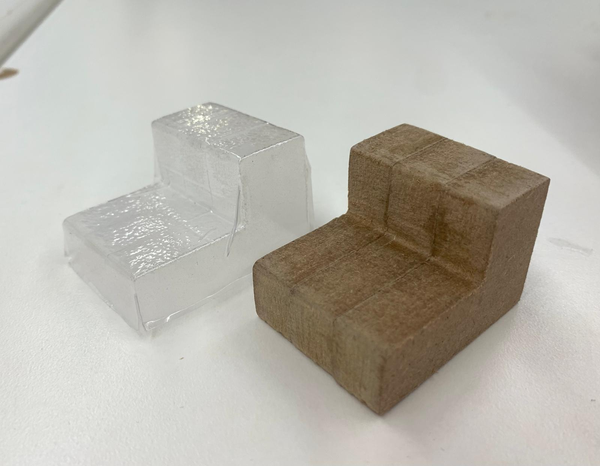
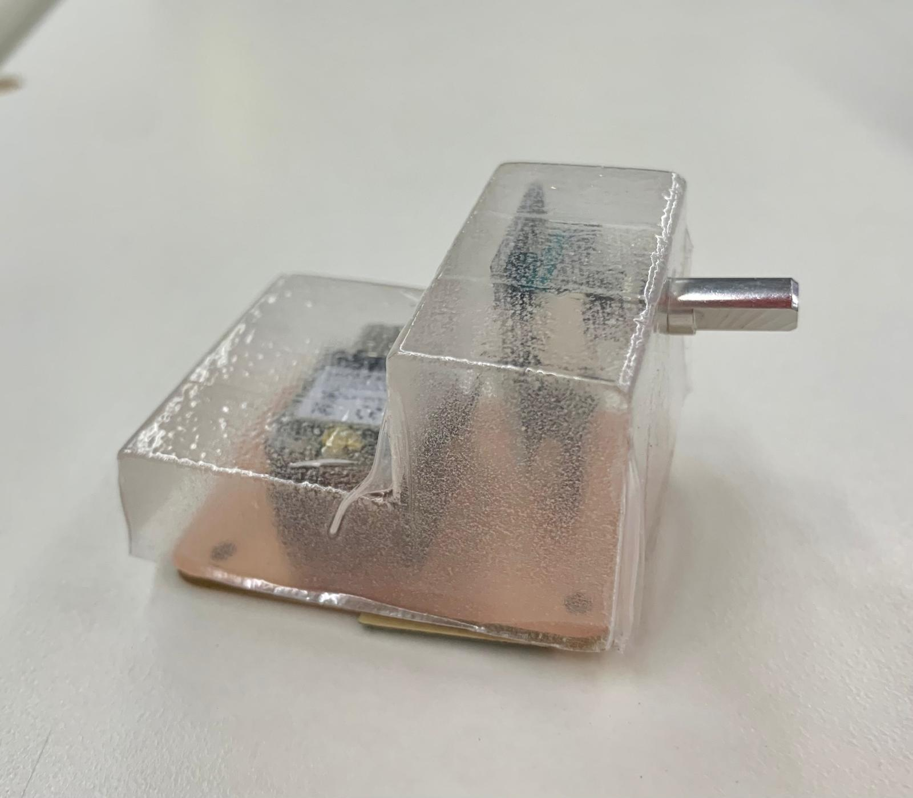
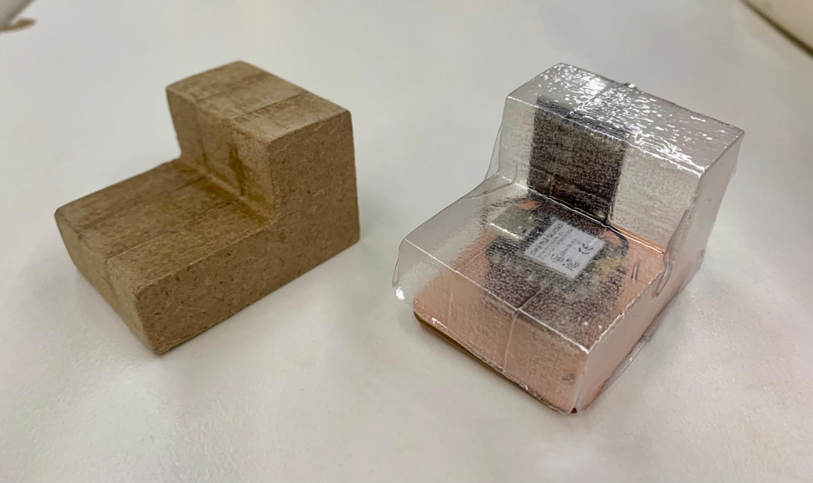

Collaboration with Matthew
Matthew custom-milled a PCB for a XIAO ESP32-C3, rotary encoder, and LED. Gurmani measured it with a vernier caliper, modelled a weatherproof translucent cover in SolidWorks, and vacuum formed it from PETG — after five days, three machines, four redirects, and more lab closures than I'd like to count.
Matthew designed a custom PCB in KiCad featuring pin holes for the XIAO ESP32-C3, a rotary encoder, and an LED. He used a website built by a past lab TA to generate toolpaths for the PCB milling CNC. Getting it right took four to five attempts — each iteration tightening tolerances until the traces were clean and the pin holes landed exactly where they needed to be.


Left: KiCad design · Right: final milled PCB — XIAO ESP32-C3, rotary encoder, LED
Once the PCB was finalised, I measured its dimensions using a vernier caliper and modelled a weatherproof translucent cover in SolidWorks — approximately 3 inches tall and 1.3 inches wide, shaped to the PCB's stepped profile, with a hole positioned so the rotary encoder knob can poke through.
| Parameter | Value |
|---|---|
| Height | ~3.0 in |
| Width | ~1.3 in |
| Cover material | PETG sheet — vacuum formed |
| Positive material | MDF — 3 CNC-milled layers, laminated |
| Edge treatment | Subtle chamfer — 3/4 inch chisel |
| CNC machine | ShopBot with 1 inch endmill |
| CAM software | Aspire |
| CAD software | SolidWorks |
Getting to the final process was not straightforward. Every path I tried hit a wall — a broken machine, an unsafe cut depth, a closed lab. Here's the honest account.
Detour 01
Blocked — software limitationAsked a TA if I could use the CNC to cut one deep piece from my SolidWorks STL. We tried to find the STL import option in the software but it was completely greyed out — unselectable. Neither of us could figure out how to enable it. I was redirected to the MonoFab Roland wax milling machine.
Detour 02
Blocked — machine down + unsafe cut depthConverted the file to a wax positive, set it up after several iterations of adjusting draft angles — then lab hours ended. Came back the next day to find the MonoFab completely kaputt. Waited the entire session. The other TA then flagged the cut as too deep anyway — the cutting region of the endmill ends before the cut depth completes, risking a snapped tool. Redirected back to the CNC.
Detour 03
Progress — then lab closedConverted the file to DWG for Aspire with the ShopBot. Found a 1 inch endmill. Had a viable path — and the lab closed for the night.
Detour 04
Blocked — unsafe setup + lab closed againThe original TA suggested using a thick piece of pine instead — single deep cut, then vacuum form over it, clamped with screws on the outside of a scrap piece of wood. Waited for the machine to become free. Lab closed again before the cut. The next day, the other TA reviewed the setup and flagged it: pine at that thickness wasn't secure enough in that configuration, and the same endmill depth problem would have returned. Final redirect: laminated MDF.
Resolution
It workedMill multiple thin MDF layers separately, laminate them together to reach full height. No endmill depth problem, no structural risk. Sand smooth, chamfer edges lightly with a chisel, vacuum form PETG over the positive. Done.
01
Measured PCB dimensions with a vernier caliper and modelled the stepped cover profile in SolidWorks — matching the PCB's two-tier height with a hole for the rotary encoder.
02
Set up the DWG in Aspire for the ShopBot CNC with a 1 inch endmill. Milled three identical MDF cutouts — thin enough to stay within the endmill's safe cutting depth, designed to be stacked to the full cover height.

Single MDF layer fresh off the ShopBot CNC
03
Laminated the three MDF layers with wood glue, clamped the stack, and left it to cure for an hour. The result: a solid stepped block at full cover height — no single deep cut required.

Three MDF layers laminated and clamped — one hour cure time
04
Sanded the laminated block smooth — glue lines between layers needed to disappear before vacuum forming since any surface texture transfers directly to the PETG. Used a 3/4 inch chisel to add a subtle chamfer to the edges so the PETG would release cleanly after forming.

Sanded and chamfered MDF positive — ready for vacuum forming
05
Vacuum formed using a PETG sheet on the lab's desktop vacuum forming machine. The PETG heated until pliable, the positive was raised into it, and the vacuum pulled the sheet tight around every surface — including into the step detail and around the encoder hole position.

PETG pulled tight around the MDF positive — fresh off the machine

Positive and cover side by side after separation
06
Cut the cover out from the excess PETG sheet and fitted it over the assembled PCB — the XIAO ESP32-C3 sits on the lower tier, the rotary encoder knob pokes through the upper tier. The PETG is translucent throughout.
Cover fitted over PCB — rotary encoder shaft poking through


Translucent PETG over copper PCB
Final vacuum formed PETG cover — fitted over custom milled PCB
Laminating thin MDF layers solved every problem the previous approaches hit. The PETG picked up the stepped profile cleanly. The subtle chisel chamfer was enough to help release without distorting the edges.
Start with laminated MDF from day one. A more aggressive edge radius would give the PETG cleaner corners — the chisel chamfer was subtle enough that the sharp edges transferred slightly to the cover. More sanding passes before forming would also reduce surface texture transfer.